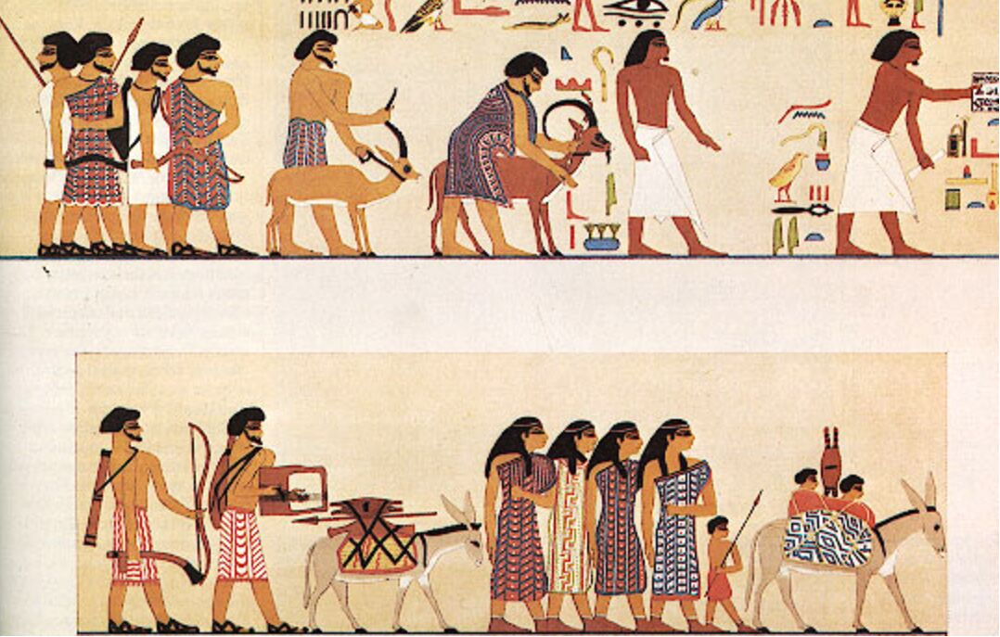
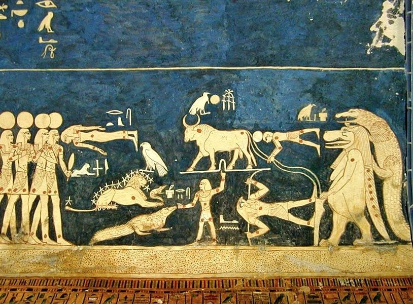

Êxodo 5-11
Período: ~1446 a.C. (Confronto com o Poder Imperial Egípcio)
As dez pragas não foram apenas fenômenos naturais, mas um confronto teológico direto entre Yahweh e os deuses do Egito. Cada praga atacava uma divindade específica do panteão egípcio: o Nilo (deus Hápi), as rãs (deusa Heqet), o sol (deus Rá), demonstrando a supremacia do Deus de Israel.
Contexto Cultural: O Faraó, considerado uma divindade viva, via seu poder e autoridade desafiados diretamente. O "endurecimento do coração" de Faraó reflete tanto sua teimosia quanto o julgamento divino progressivo. Os magos egípcios, representando o poder ocultista do Egito, foram incapazes de reproduzir as pragas após as primeiras três, reconhecendo: "Isto é o dedo de Deus" (Êxodo 8:19).
Cada praga foi um ataque direto aos deuses egípcios, demonstrando a supremacia de Yahweh sobre todo o panteão do Egito.

Fonte: Armstrong Institute of Biblical Archaeology
Arte egípcia antiga mostrando cenas relacionadas aos eventos das pragas.

Fonte: TheTorah.com - Ancient Egyptian Context
Êxodo 5:1-11:10
Este bloco de Êxodo, compreendendo os capítulos 5 a 11, narra o intenso e dramático confronto entre Moisés e Faraó, culminando nas dez pragas que assolaram o Egito. O cerne desta narrativa é a revelação progressiva da soberania inquestionável de Yahweh sobre todas as divindades egípcias e sobre o próprio Faraó, que se considerava um deus. A recusa obstinada de Faraó em libertar o povo de Israel serve como pano de fundo para a demonstração do poder divino, que não apenas liberta seu povo, mas também julga a opressão e a idolatria.
A importância teológica deste bloco reside na afirmação da identidade de Yahweh como o único Deus verdadeiro e soberano. As pragas não são meros desastres naturais, mas atos deliberados de juízo divino, cada uma delas direcionada a uma divindade egípcia específica ou a um aspecto fundamental da vida e da cultura egípcia. Através desses eventos, Deus não só resgata Israel da escravidão física, mas também os educa sobre Sua natureza e poder, preparando-os para a aliança no Sinai.
Além disso, o endurecimento do coração de Faraó é um tema central, levantando questões profundas sobre a liberdade humana e a soberania divina. A narrativa explora a interação complexa entre a escolha humana e o propósito divino, mostrando como a resistência de Faraó, embora condenável, serve aos planos maiores de Deus para glorificar Seu nome e demonstrar Seu poder a Israel e às na nações. Este confronto estabelece um paradigma para a luta entre o bem e o mal, a libertação e a opressão, e a fé e a incredulidade.
Este estudo aprofundará cada uma dessas dimensões, buscando compreender o significado exegético e teológico dos eventos, o contexto histórico-cultural em que se desenrolaram, e as implicações para a fé e a vida contemporâneas, com base em uma análise cuidadosa do texto hebraico e em insights de comentaristas renomados como John Durham, Douglas Stuart e Brevard Childs.
Para compreender plenamente o Bloco 02 de Êxodo, é crucial situá-lo em seu contexto histórico e cultural específico. O período mais aceito para o Êxodo, embora debatido, aponta para o Novo Reino do Egito, aproximadamente entre 1450 e 1250 a.C. [1]. Durante este período, o Egito era uma superpotência dominante, com um império que se estendia por vastas regiões. Faraós como Tutmés III, Amenhotep II, e Ramsés II são frequentemente mencionados como possíveis governantes durante a opressão e o Êxodo. A arquitetura monumental, a organização social hierárquica e a complexa religião politeísta eram características marcantes desta era. A figura do Faraó era central, considerado um deus vivo, filho de Rá, e a encarnação da ordem cósmica (Ma'at). Sua autoridade era absoluta, e qualquer desafio a ele era visto como uma afronta direta aos deuses e à própria estrutura do universo egípcio.
As práticas culturais egípcias eram profundamente enraizadas em sua cosmovisão religiosa. A vida após a morte, a mumificação, o culto aos deuses do panteão egípcio (como Rá, Osíris, Hórus, Hapi, entre outros) e a magia eram elementos intrínsecos ao cotidiano. Cada praga, como veremos, ataca diretamente uma ou mais dessas divindades ou aspectos vitais da vida egípcia, desmascarando sua impotência diante de Yahweh. Por exemplo, a praga do Nilo (sangue) desafia Hapi, o deus do Nilo, e Khnum, o deus das fontes do Nilo. A praga das rãs atinge Heket, a deusa da fertilidade com cabeça de rã. As pragas dos insetos e das doenças do gado atacam divindades associadas à proteção da vida e da saúde. A escuridão desafia Rá, o deus sol, a divindade suprema do Egito. [2]
Em contraste, as práticas culturais israelitas eram as de um povo escravizado, mas que mantinha uma memória de sua herança patriarcal e da promessa de um Deus único. Embora o texto não detalhe extensivamente suas práticas religiosas durante a escravidão, a narrativa do Êxodo é fundamental para a formação de sua identidade como povo de Yahweh. A Páscoa, instituída no final deste bloco, torna-se o rito central que celebra a libertação e a aliança com Deus, contrastando fortemente com os rituais egípcios e estabelecendo um novo paradigma de adoração e relacionamento com o divino.
A geografia desempenha um papel significativo na narrativa. O Egito, com o rio Nilo como sua artéria vital, é o palco principal. A região de Gósen, onde os israelitas habitavam, é poupada de algumas pragas, demonstrando a distinção de Deus entre Seu povo e os egípcios. A menção do deserto do Sinai como destino final para a adoração (Êxodo 5:1-3) já aponta para a jornada que se seguirá. A rota exata do Êxodo é objeto de debate, mas a ênfase está na saída do Egito, um lugar de escravidão, para a liberdade e a terra prometida. A arqueologia, embora não forneça evidências diretas e inequívocas do Êxodo em larga escala, oferece insights sobre a vida no Egito do Novo Reino, as cidades-armazém como Pitom e Ramessés, e a presença de povos semitas na região, corroborando o pano de fundo cultural e histórico da narrativa bíblica. [3]
[1] Durham, John I. Word Biblical Commentary, Vol. 3: Exodus. Thomas Nelson, 1987.
[2] Stuart, Douglas K. Exodus. The New American Commentary. B&H Publishing Group, 2006.
[3] Childs, Brevard S. The Book of Exodus: A Critical, Theological Commentary. Westminster John Knox Press, 1974.
O confronto entre Moisés e Faraó, detalhado em Êxodo 5-11, é uma narrativa cuidadosamente estruturada que revela a escalada do poder divino em contraste com a obstinação humana. O texto começa com a primeira audiência de Moisés e Arão com Faraó (Êxodo 5:1-5), onde a demanda para deixar o povo ir adorar a Yahweh no deserto é recebida com desprezo e um aumento da opressão sobre os israelitas. A resposta de Faraó, "Quem é Yahweh para que eu ouça a sua voz e deixe Israel ir? Não conheço Yahweh, nem tampouco deixarei Israel ir" (Êxodo 5:2), estabelece o tema central do conflito: o reconhecimento da soberania de Deus. A palavra hebraica para "conhecer" (יָדַע - yada') aqui implica não apenas conhecimento intelectual, mas um reconhecimento de autoridade e poder, algo que Faraó se recusa a conceder. [1]
A narrativa das dez pragas segue um padrão literário recorrente, muitas vezes triádico, que enfatiza a progressão do juízo divino. Cada praga é precedida por um aviso a Faraó, seguido pela execução da praga, a súplica de Faraó para que a praga seja removida, a remoção da praga e, finalmente, o endurecimento do coração de Faraó. As pragas podem ser agrupadas em três ciclos de três, com a décima praga sendo o clímax. O primeiro ciclo (sangue, rãs, piolhos) demonstra o poder de Yahweh sobre os elementos naturais e a magia egípcia. O segundo ciclo (moscas, peste no gado, tumores) atinge diretamente a vida e a saúde dos egípcios e seus bens. O terceiro ciclo (chuva de pedras, gafanhotos, trevas) culmina na destruição da terra e na negação da luz, um símbolo da própria divindade de Faraó. [2]
A exegese detalhada de cada praga revela sua especificidade e seu propósito teológico. A praga do sangue (Êxodo 7:14-25) transforma o Nilo, a fonte de vida do Egito e objeto de adoração, em sangue, simbolizando a morte e a impureza. As rãs (Êxodo 8:1-15) invadem todas as esferas da vida egípcia, tornando-as insuportáveis. Os piolhos (Êxodo 8:16-19) são a primeira praga que os magos egípcios não conseguem replicar, admitindo: "Isto é o dedo de Deus" (Êxodo 8:19). As moscas (Êxodo 8:20-32) introduzem a distinção entre egípcios e israelitas, poupando a terra de Gósen. A peste no gado (Êxodo 9:1-7) atinge a riqueza e os deuses associados à fertilidade animal. Os tumores (Êxodo 9:8-12) são uma aflição pessoal e dolorosa, que atinge até mesmo os magos.
A chuva de pedras (Êxodo 9:13-35) é uma demonstração espetacular do controle de Yahweh sobre o clima, com fogo misturado ao granizo, algo incomum no Egito. Os gafanhotos (Êxodo 10:1-20) devoram o que restou das colheitas, levando o Egito à beira da fome. A praga das trevas (Êxodo 10:21-29) mergulha o Egito em uma escuridão palpável por três dias, um ataque direto a Rá, o deus sol, e a própria fonte de luz e vida egípcia. Em contraste, "houve luz nas habitações de todos os filhos de Israel" (Êxodo 10:23), reforçando a distinção divina. A estrutura literária dessas pragas, com sua repetição e intensificação, serve para construir a tensão e sublinhar a inevitabilidade do juízo de Deus. [3]
Um aspecto crucial da teologia do texto é o tema do endurecimento do coração de Faraó. O texto alterna entre Faraó endurecendo seu próprio coração e Deus endurecendo o coração de Faraó. Essa dualidade não anula a responsabilidade de Faraó, mas demonstra a soberania de Deus que usa a obstinação humana para cumprir Seus propósitos. O endurecimento do coração de Faraó serve para que Yahweh possa "multiplicar os meus sinais e as minhas maravilhas na terra do Egito" (Êxodo 7:3) e para que Seu nome seja proclamado em toda a terra (Êxodo 9:16). Assim, a recusa de Faraó se torna o meio pelo qual a glória de Deus é manifestada de forma ainda mais poderosa.
As pragas são, portanto, mais do que meros castigos; são revelações teofânicas do caráter e do poder de Yahweh. Elas demonstram que Ele é o Deus da criação, com controle absoluto sobre a natureza; o Deus da história, que intervém nos assuntos humanos para cumprir Suas promessas; e o Deus da justiça, que julga a opressão e a idolatria. A cada praga, a incapacidade dos deuses egípcios e dos magos de Faraó de resistir a Yahweh é exposta, culminando na humilhação completa do panteão egípcio. A finalidade última é que "os egípcios saberão que eu sou Yahweh" (Êxodo 7:5), e que Israel também "saberá que eu sou Yahweh, vosso Deus" (Êxodo 6:7). [1]
[1] Durham, John I. Word Biblical Commentary, Vol. 3: Exodus. Thomas Nelson, 1987.
[2] Stuart, Douglas K. Exodus. The New American Commentary. B&H Publishing Group, 2006.
[3] Childs, Brevard S. The Book of Exodus: A Critical, Theological Commentary. Westminster John Knox Press, 1974.
A graça de Deus, embora muitas vezes obscurecida pela severidade dos juízos divinos, é manifesta de diversas formas neste bloco de Êxodo. Primeiramente, a própria iniciativa de Deus em intervir em favor de um povo escravizado e oprimido é um ato de graça. Israel não merecia a libertação; sua condição era de servidão e, em muitos aspectos, de assimilação cultural e religiosa ao Egito. No entanto, Deus se lembra de Sua aliança com Abraão, Isaque e Jacó (Êxodo 6:2-5), demonstrando que Sua fidelidade e amor inabalável (חֶסֶד - hesed) são a base de Sua ação. A libertação não é um prêmio por mérito, mas uma expressão da bondade soberana de Deus para com Seu povo escolhido. [1]
Além disso, a graça de Deus é evidente na distinção que Ele faz entre os egípcios e os israelitas durante as pragas. A partir da praga das moscas, a terra de Gósen, onde os israelitas habitavam, é poupada dos efeitos devastadores das pragas (Êxodo 8:22-23). Esta proteção divina não é apenas um ato de livramento físico, mas uma demonstração clara do cuidado e da eleição de Deus. Mesmo em meio ao juízo, Deus provê um refúgio para Seu povo, mostrando que Sua ira é seletiva e justa, e que Sua graça se estende para preservar aqueles que Ele escolheu. A capacidade de Israel de ver a mão de Deus agindo em seu favor, enquanto o Egito sofria, serve para fortalecer sua fé e seu entendimento da natureza de Yahweh. [2]
Finalmente, a graça se manifesta na paciência de Deus com Faraó. Embora o coração de Faraó fosse endurecido, Deus lhe deu repetidas oportunidades para se arrepender e obedecer. Cada praga foi precedida por um aviso, e Faraó teve a chance de ceder e evitar a próxima calamidade. A persistência de Deus em enviar Moisés e Arão, mesmo diante da recusa obstinada de Faraó, revela uma longanimidade divina que busca a glória de Deus através da demonstração de Seu poder, mas também oferece a possibilidade de reconhecimento e submissão. A graça, neste contexto, não é a ausência de juízo, mas a oportunidade de resposta antes que o juízo final se concretize. [3]
[1] Durham, John I. Word Biblical Commentary, Vol. 3: Exodus. Thomas Nelson, 1987.
[2] Stuart, Douglas K. Exodus. The New American Commentary. B&H Publishing Group, 2006.
[3] Childs, Brevard S. The Book of Exodus: A Critical, Theological Commentary. Westminster John Knox Press, 1974.
No contexto da escravidão egípcia, a adoração dos israelitas a Yahweh era, por necessidade, limitada e oprimida. O pedido inicial de Moisés a Faraó era para que o povo pudesse ir ao deserto para "celebrar uma festa a Yahweh" (Êxodo 5:1) e "oferecer sacrifícios a Yahweh, nosso Deus" (Êxodo 5:3). Isso indica que, mesmo sob o jugo egípcio, havia um desejo e uma compreensão rudimentar da necessidade de adorar a Deus através de rituais específicos. A adoração, neste estágio, era primariamente um ato de obediência e reconhecimento da soberania de Yahweh, contrastando com a adoração forçada aos deuses egípcios. A recusa de Faraó em permitir essa adoração é, portanto, um ataque direto à identidade religiosa e à liberdade do povo de Israel. [1]
À medida que as pragas se desenrolam, a adoração dos israelitas se manifesta de maneiras mais profundas. Embora o texto não descreva rituais elaborados de adoração durante as pragas, a resposta do povo à intervenção divina é uma forma de adoração. A fé e a obediência de Moisés e Arão em seguir as instruções de Deus, mesmo diante da oposição de Faraó e do desânimo do próprio povo, servem como um modelo de adoração através da obediência. A distinção que Deus faz entre os egípcios e os israelitas, poupando estes últimos das pragas, reforça a crença de Israel na proteção e no poder de seu Deus, levando a um reconhecimento crescente de Sua singularidade. [2]
O clímax da adoração neste bloco, e um dos momentos mais significativos de todo o Êxodo, é a instituição da Páscoa (Êxodo 12, embora tecnicamente fora do Bloco 02, é o resultado direto do confronto). A obediência de Israel às instruções detalhadas de Deus para o sacrifício do cordeiro, a aspersão do sangue nos umbrais das portas e a refeição da Páscoa, é um ato supremo de adoração e fé. Este ritual não apenas os protege da praga final, mas também os une em uma experiência comum de libertação e redenção, estabelecendo um padrão para a adoração futura. A Páscoa se torna o memorial central da intervenção salvífica de Deus, um ato de adoração que celebra a soberania de Yahweh e Sua fidelidade à aliança. [3]
[1] Durham, John I. Word Biblical Commentary, Vol. 3: Exodus. Thomas Nelson, 1987.
[2] Stuart, Douglas K. Exodus. The New American Commentary. B&H Publishing Group, 2006.
[3] Childs, Brevard S. The Book of Exodus: A Critical, Theological Commentary. Westminster John Knox Press, 1974.
O Bloco 02 de Êxodo oferece revelações cruciais sobre a natureza e a extensão do Reino de Deus, mesmo antes da formalização da aliança no Sinai. Primeiramente, a narrativa demonstra que o Reino de Deus não está limitado a um território ou a um povo específico, mas se manifesta através de Sua soberania universal. As pragas não são apenas um confronto com Faraó, mas uma declaração de guerra contra todo o panteão egípcio e contra a ideologia de que o Faraó era um deus. Ao humilhar os deuses do Egito, Yahweh estabelece Sua supremacia como o único Deus verdadeiro, cujo domínio se estende sobre toda a criação e sobre todas as nações. A frase recorrente "para que saibam que eu sou Yahweh" (Êxodo 7:5, 8:22, 9:14, 10:2) sublinha esta revelação do Reino de Deus como um reino de poder e autoridade inquestionáveis. [1]
Em segundo lugar, o Reino de Deus é revelado como um reino de justiça e libertação. A intervenção divina em favor dos israelitas oprimidos demonstra que Deus é um Deus que ouve o clamor de Seu povo e age para libertá-los da escravidão e da injustiça. A libertação de Israel do Egito não é apenas um evento histórico, mas um paradigma da obra redentora de Deus, que resgata Seu povo do domínio do pecado e da morte. As pragas, embora juízos, são também atos de justiça que punem a opressão e a idolatria, preparando o caminho para a instauração de um povo livre para servir a Deus. O Reino de Deus, portanto, é um reino onde a justiça prevalece e onde os oprimidos encontram libertação. [2]
Finalmente, o Reino de Deus é revelado como um reino que exige obediência e fé. A recusa de Faraó em reconhecer a autoridade de Yahweh e em libertar Israel resulta em juízo. Em contraste, a obediência de Moisés e Arão, e a eventual obediência dos israelitas às instruções de Deus (como na Páscoa), são recompensadas com livramento e proteção. A narrativa estabelece que a entrada e a participação no Reino de Deus estão intrinsecamente ligadas à submissão à Sua vontade e ao reconhecimento de Sua soberania. As pragas servem como uma lição para Israel e para as nações de que há um único Rei soberano, e que a verdadeira vida e bênção são encontradas em Sua obediência. [3]
[1] Durham, John I. Word Biblical Commentary, Vol. 3: Exodus. Thomas Nelson, 1987.
[2] Stuart, Douglas K. Exodus. The New American Commentary. B&H Publishing Group, 2006.
[3] Childs, Brevard S. The Book of Exodus: A Critical, Theological Commentary. Westminster John Knox Press, 1974.
O Bloco 02 de Êxodo é um manancial de profundas verdades teológicas que ressoam através de toda a Escritura. A narrativa das pragas e do confronto com Faraó é fundamental para a compreensão da Teologia Sistemática, especialmente no que tange à Redenção, Aliança e Santidade de Deus. A redenção, aqui, é apresentada como um ato soberano e poderoso de Deus, que intervém diretamente na história para libertar Seu povo da escravidão. Não é uma redenção alcançada por méritos humanos, mas pela graça e poder divinos. Este evento estabelece o paradigma para toda a história da redenção, culminando na obra de Cristo. A Aliança, embora formalizada no Sinai, tem suas raízes na promessa feita aos patriarcas, e a libertação do Egito é o cumprimento dessa promessa, solidificando o relacionamento pactual entre Yahweh e Israel. A santidade de Deus é revelada em Sua distinção do pecado e da idolatria egípcia, e em Seu juízo contra eles, demonstrando que Ele é um Deus que não tolera a injustiça e a rebelião. [1]
A Cristologia é ricamente prefigurada nesta narrativa. Moisés, como libertador e mediador, aponta para Cristo, o Libertador e Mediador supremo. Assim como Moisés intercede por Israel diante de Faraó, Cristo intercede por Seu povo diante de Deus. As pragas, que culminam na morte dos primogênitos e na instituição da Páscoa, são um tipo da obra redentora de Cristo. O sangue do cordeiro pascal, que protege os israelitas da morte, é um poderoso símbolo do sangue de Cristo, que redime e salva Seu povo do juízo do pecado. A libertação da escravidão egípcia prefigura a libertação da escravidão do pecado e da morte que Cristo oferece. A Páscoa, em particular, é o elo mais forte, sendo Cristo o "nosso Cordeiro Pascal" (1 Coríntios 5:7), cujo sacrifício nos liberta. [2]
O Plano de Redenção de Deus é progressivamente revelado neste bloco. A libertação do Egito não é um fim em si mesma, mas um passo crucial no plano maior de Deus para formar um povo para Si, para habitar entre eles e para abençoar todas as nações através deles. As pragas servem para demonstrar o poder de Deus não apenas a Israel, mas também ao Egito e, por extensão, a todas as nações. O objetivo final é que o nome de Yahweh seja proclamado em toda a terra (Êxodo 9:16). Este plano se estende até a consumação dos tempos, quando o Reino de Deus será plenamente estabelecido e toda a criação reconhecerá a soberania de Cristo. [3]
Os temas teológicos maiores que emergem incluem a soberania absoluta de Deus sobre a criação, a história e os poderes humanos e espirituais. As pragas desmascaram a impotência dos deuses egípcios e a fragilidade do poder de Faraó, afirmando que Yahweh é o único Deus verdadeiro. A justiça divina é outro tema proeminente, com Deus agindo para corrigir a injustiça e punir a opressão. A fidelidade de Deus às Suas promessas, mesmo diante da infidelidade humana, é constantemente reafirmada. Finalmente, a eleição de Israel como povo de Deus é central, não por mérito próprio, mas pela graça soberana de Deus, que os escolhe para serem um testemunho de Seu poder e amor ao mundo. [1]
[1] Durham, John I. Word Biblical Commentary, Vol. 3: Exodus. Thomas Nelson, 1987.
[2] Stuart, Douglas K. Exodus. The New American Commentary. B&H Publishing Group, 2006.
[3] Childs, Brevard S. The Book of Exodus: A Critical, Theological Commentary. Westminster John Knox Press, 1974.
As verdades reveladas no Bloco 02 de Êxodo possuem profundas aplicações práticas para a vida contemporânea, tanto no âmbito pessoal quanto no eclesiástico e social. Para a vida pessoal, a narrativa do confronto entre Yahweh e Faraó nos lembra da soberania absoluta de Deus sobre todas as circunstâncias e poderes. Em momentos de opressão, dificuldade ou dúvida, somos chamados a confiar que Deus é capaz de intervir poderosamente em nosso favor, assim como fez por Israel. A obstinação de Faraó serve como um alerta contra o endurecimento do coração diante da voz de Deus, incentivando a humildade e a prontidão para obedecer. A distinção que Deus faz entre Seu povo e o mundo nos encoraja a viver de forma distinta, confiando em Sua proteção e provisão em meio às adversidades. [1]
Para a Igreja, este bloco reforça a centralidade da libertação e da redenção na mensagem do evangelho. A Igreja é chamada a ser um agente de libertação, proclamando a liberdade em Cristo do pecado e da opressão espiritual. A história de Êxodo nos lembra que a adoração verdadeira envolve obediência e reconhecimento da soberania de Deus, e que a comunidade de fé é formada por aqueles que foram resgatados por Sua graça. A Páscoa, como memorial da libertação, encontra seu cumprimento na Ceia do Senhor, que celebra a nova aliança no sangue de Cristo, convidando a Igreja a uma constante reflexão sobre o sacrifício redentor e a viver em gratidão e santidade. [2]
No que diz respeito à sociedade e às questões contemporâneas, a narrativa de Êxodo 5-11 oferece um poderoso modelo para a luta contra a injustiça e a opressão. Deus se posiciona ao lado dos oprimidos e age para derrubar sistemas e poderes que escravizam e desumanizam. Isso tem implicações diretas para o engajamento cristão em questões de justiça social, direitos humanos e combate à desigualdade. A soberania de Deus sobre os poderes terrenos nos encoraja a não temer as estruturas de poder, mas a confiar que Deus pode e irá intervir para estabelecer Sua justiça. A mensagem de Êxodo é um chamado à esperança e à ação para aqueles que buscam a transformação de realidades de opressão em liberdade e dignidade. [3]
[1] Durham, John I. Word Biblical Commentary, Vol. 3: Exodus. Thomas Nelson, 1987.
[2] Stuart, Douglas K. Exodus. The New American Commentary. B&H Publishing Group, 2006.
[3] Childs, Brevard S. The Book of Exodus: A Critical, Theological Commentary. Westminster John Knox Press, 1974.
Para um aprofundamento adicional nos temas abordados no Bloco 02 de Êxodo, diversas conexões podem ser feitas com outros textos bíblicos e tópicos teológicos:
Soberania de Deus e Juízo Divino: A demonstração do poder de Yahweh sobre os deuses egípcios e Faraó encontra paralelos em passagens como Salmos 105 e 135, que celebram os atos poderosos de Deus no Êxodo. O tema do juízo divino sobre nações idólatras e opressoras é recorrente em profetas como Isaías (capítulos 13-23, oráculos contra as nações) e Jeremias (capítulos 46-51, oráculos contra o Egito e outras nações), que reiteram a soberania de Deus sobre a história e os impérios. A batalha cósmica entre Deus e os poderes do mal é um tema que se estende até o livro de Apocalipse, onde o Cordeiro vence a Besta e seus aliados, culminando na vitória final do Reino de Deus.
Endurecimento do Coração: O conceito do endurecimento do coração de Faraó é explorado em Romanos 9:14-18, onde Paulo discute a soberania de Deus na eleição e no juízo, usando Faraó como exemplo da justiça divina. Este tema levanta questões complexas sobre a liberdade humana e a predestinação, e sua compreensão é vital para uma teologia bíblica robusta.
O Êxodo como Paradigma de Redenção: O evento do Êxodo é a matriz para a compreensão da redenção em toda a Bíblia. Jesus Cristo é apresentado como o novo Moisés, que realiza um novo e maior Êxodo, libertando Seu povo do pecado e da morte. A celebração da Páscoa judaica encontra seu cumprimento na Páscoa cristã, onde Cristo é o Cordeiro pascal que tira o pecado do mundo (João 1:29; 1 Coríntios 5:7). O livro de Hebreus, em particular, faz extensas conexões entre o Êxodo, a Lei e a obra de Cristo, mostrando a superioridade da nova aliança.
A Luta Espiritual: O confronto entre Moisés e os magos egípcios (Êxodo 7:10-12, 8:18-19) ilustra a realidade da luta espiritual. Embora os magos pudessem replicar alguns dos primeiros milagres, eles foram finalmente superados pelo poder de Yahweh, reconhecendo a intervenção divina. Este tema é desenvolvido no Novo Testamento, onde os crentes são exortados a se revestir da armadura de Deus para resistir às forças espirituais do mal (Efésios 6:10-18).
A Formação da Identidade do Povo de Deus: A libertação do Egito é o evento fundacional que molda a identidade de Israel como o povo de Yahweh. A experiência da escravidão e da libertação serve como um lembrete constante de quem eles são e de quem Deus é. Este tema é ecoado em Deuteronômio, que frequentemente relembra Israel de sua história para exortá-los à obediência e fidelidade à aliança. Para a Igreja, isso significa que nossa identidade é definida por nossa libertação do pecado e nossa nova vida em Cristo.